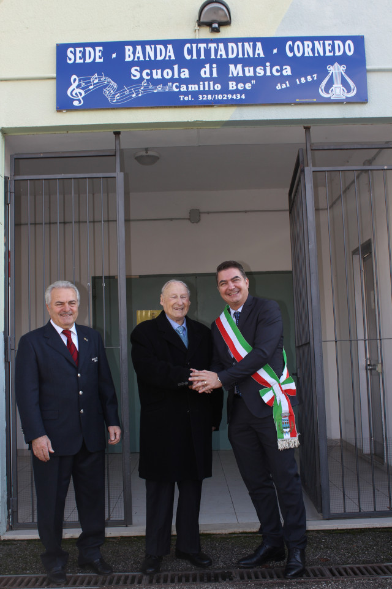
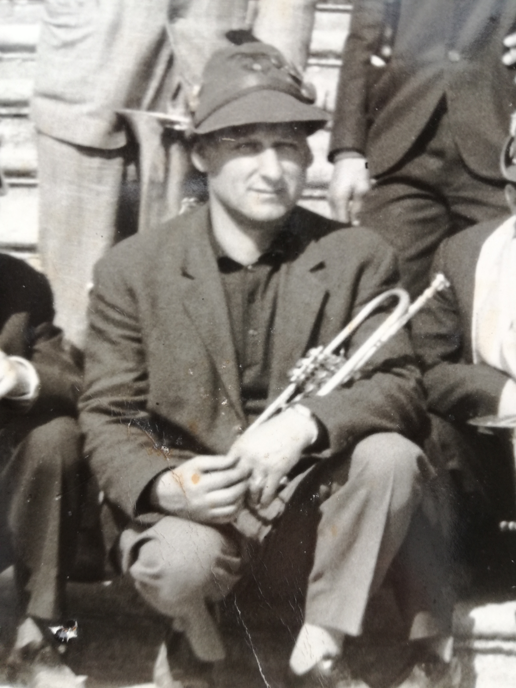

25 Luglio 1928 - 06 Febbraio 2019
Camillo Bee rimarrà sempre nei ricordi della Banda Cittadina di Cornedo, figura stimabile che ci ha lasciati nella giornata del 6 febbraio 2019.
Presidente Onorario dell’associazione era una persona dalla forte passione musicale e dal carattere determinato.
Il 20 novembre 2016 alla presenza del sindaco Martino Montagna la scuola di musica della Banda Cittadina di Cornedo è stata intitolata a lui.
Camillo Bee quel giorno era presente alla cerimonia ed in gran forma con i suoi 88 anni.
L'intitolazione di una struttura ad una persona ancora in vita è un fatto alquanto eccezionale che fa capire quanto sia stato importante Camillo per la Banda, la Scuola di Musica e per l'intera comunità cornedese.
Nato il 25 luglio 1928, figlio unico di Antonio e Lucia Marangon, ha frequentato l'istituto tecnico professionale conseguendo il diploma di tessitore nel 1943. Durante la guerra viene chiamato all’Ispettorato del Lavoro di Vicenza. Alla fine del conflitto ritorna a casa e lavora prima come autista e camionista e poi viene assunto come magazziniere alla ditta Mainetti dove vi rimane fino alla pensione.
Negli anni ha partecipato attivamente alla vita politica e sociale del paese natale, ricoprendo la carica di consigliere comunale e di presidente della "Casa di riposo Alice ed Umberto Tassoni".
La passione per la musica nasce alla fine del conflitto mondiale, quando comincia anche a suonare la tromba, sotto la guida del maestro Angelo Pincer.
Allora il corpo bandistico era in ferma per questioni belliche ma piano piano si stava tentando di riformarlo.
Camillo è uno che ci crede fortemente e partecipa con entusiasmo alle prove musicali che si tengono in un vecchio locale che, come lui stesso ci ha ricordato, "si allagava ad ogni acquazzone".
Questo primo tentativo di ricostituire il Corpo Bandistico, fallisce per questioni economiche ma nonostante ciò, Camillo continua con la sua passione musicale e partecipa all'effetiva rinascita della Banda negli anni ’50.
Da allora ha suonato e organizzato concerti, servizi musicali, pranzi e gite per la banda. Ha ricoperto incarichi come tesoriere, segretario, vicepresidente ed in fine presidente onorario.
Ha gestito e seguito l'associazione musicale fino a pochi anni fa, quando a più di 85 anni si è ritirato conservando intatta tutta la passione che per circa 70 anni lo aveva accompagnato nella vita.
Ricordiamo Camillo che da ragazzo andava la domenica a trovare la ‘morosa' a Quargnenta a piedi con lo strumento sotto il braccio in compagnia degli amici suonatori.
Univa l'amore per la musica a quello per la sua bella Ida, che poi ha felicemente sposato nel 1956, e da cui ha avuto tre figli, Donato, Paolo e Luca.
Ha trasmesso la sua passione anche a parte della sua famiglia, il terzogenito Luca è l'attuale direttore della Banda, e i nipoti Filippo e Francesco hanno seguito le orme del nonno studiando la tromba e Nicola suonando il flicorno.
Camillo ha lasciato un'impronta molto importante per la nostra comunità e soprattutto per la Banda Cittadina di Cornedo. La sua passione continuerà nel tempo attraverso la nostra musica.
Ha avuto una bella e lunga vita, attorniato da una bella famiglia e dalla sua seconda famiglia musicale. Siamo certi che continuerà ad ascoltare la nostra musica da lassù.
Grazie Camillo!